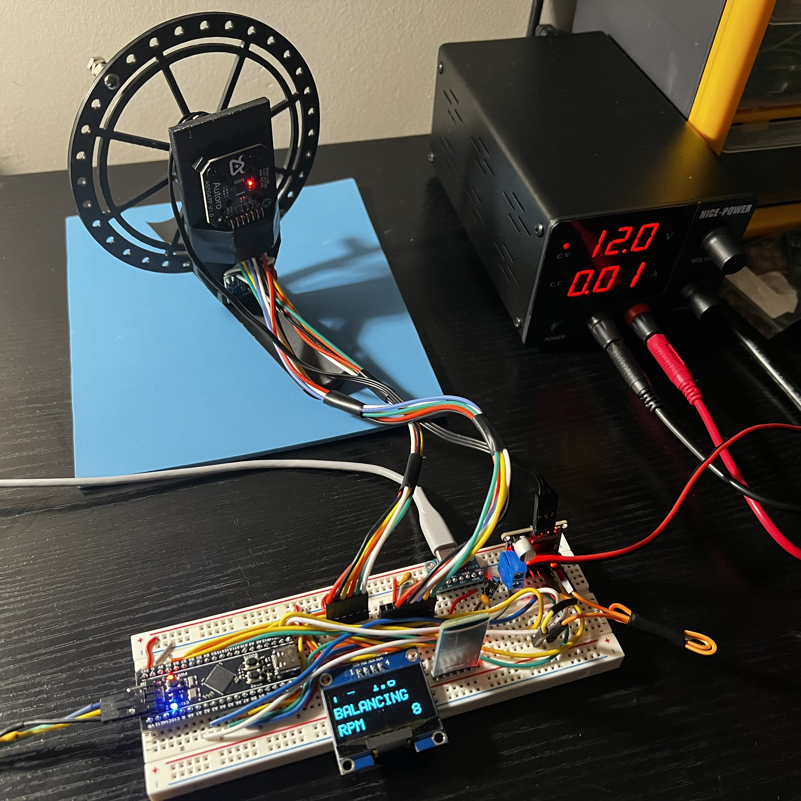
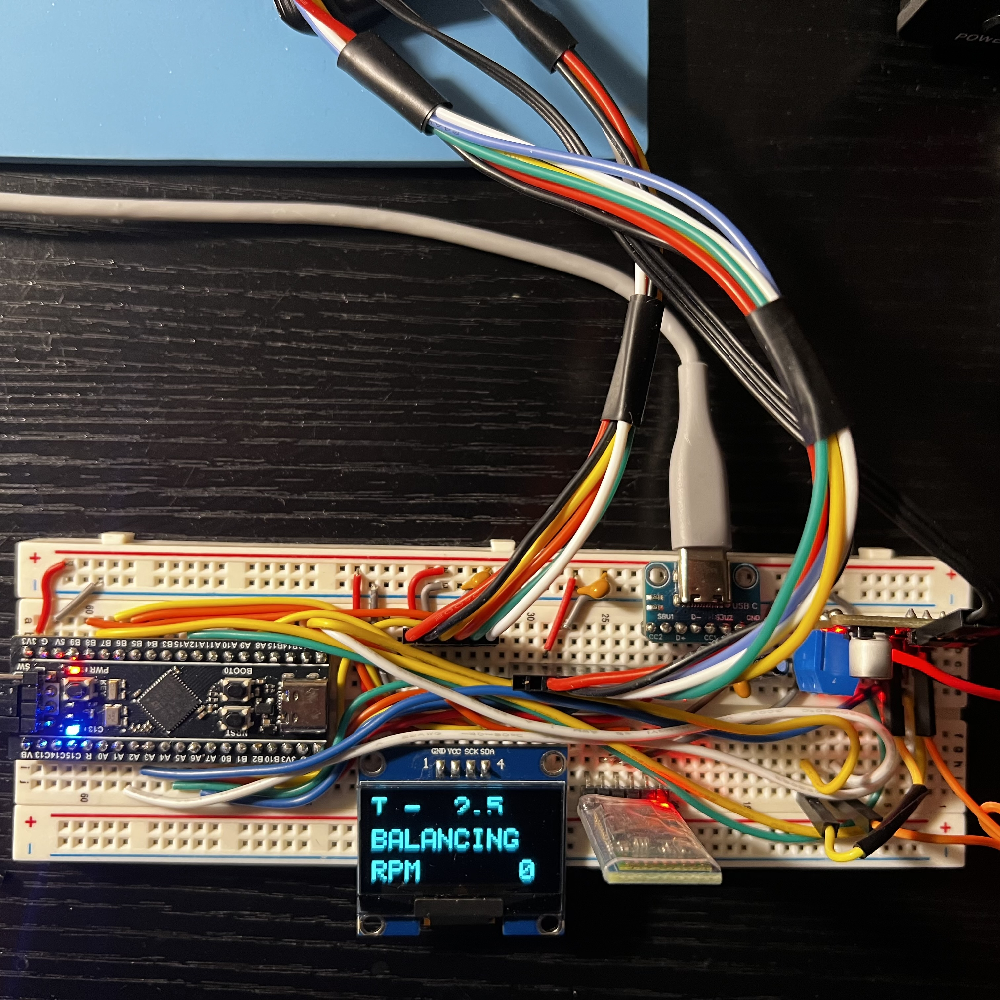
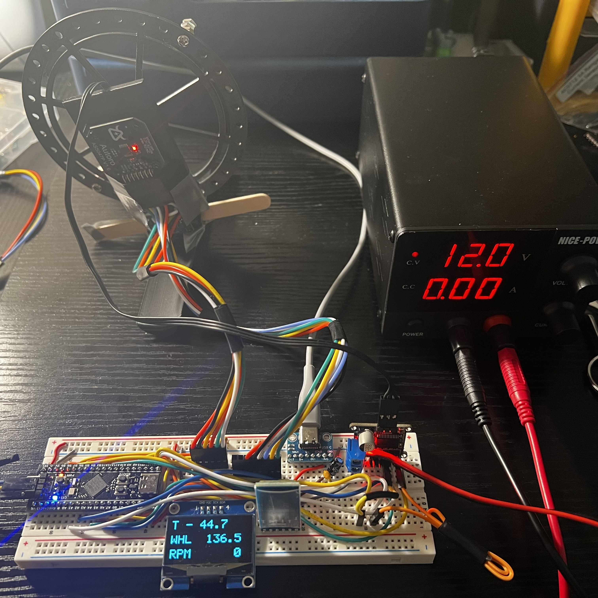
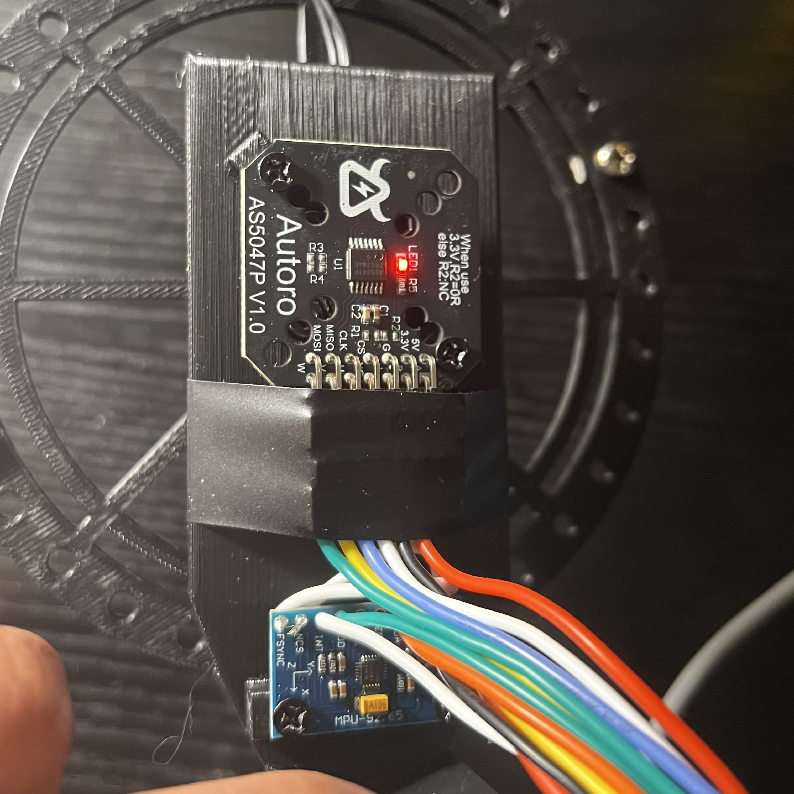
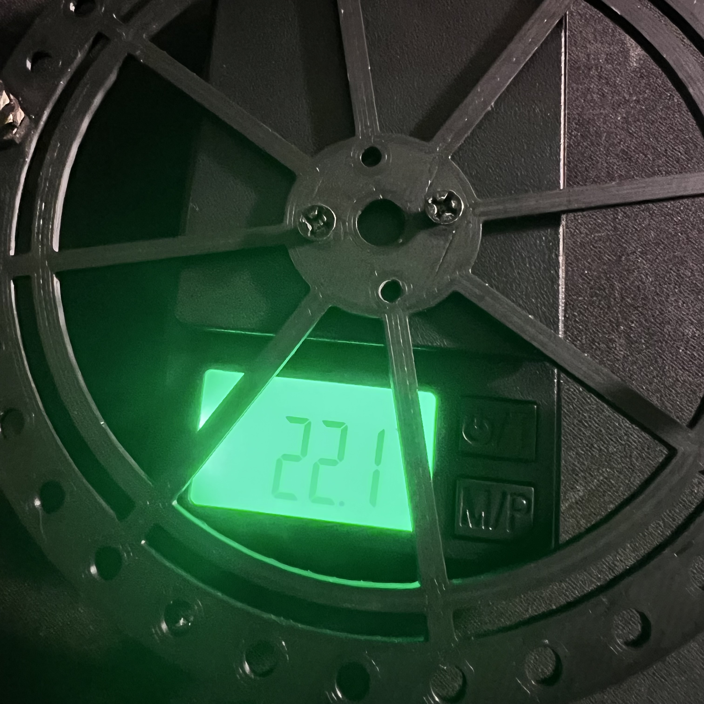

media/hero.mp4
Countdown, release, then side taps and recovery. Fixed camera, one uncut take, muted loop.
Reaction-Wheel Balancing Frame
A frame that balances on one edge by spinning a wheel. I wrote the brushless motor control and the balance controller from scratch in embedded C on an STM32F411, with no motor library.
- 11 min
- longest logged balance, through dozens of taps and pushes
- 16°
- largest lean it has recovered from
- 10 kHz
- encoder reads and motor commutation
01 How it works
Spin the wheel one way, the frame leans the other
Speeding the wheel up pushes the frame in the opposite direction. Standing on an edge is unstable, so the firmware corrects a thousand times a second. It's a desk-scale version of how satellites point themselves with reaction wheels.
-
Sense
Measure
An encoder reads the wheel's angle 10,000 times a second over SPI. An IMU reads the frame's gravity vector and rotation 1,000 times a second over I²C.
-
Decide
Compute
A four-state LQR controller turns tilt, tilt rate, wheel speed and wheel turn into a single number: the motor voltage.
-
Act
Drive
Field-oriented commutation turns that voltage into three sine-wave PWM signals for the motor driver, so the wheel gets smooth torque in either direction.
02 Hardware
Bill of materials
Off-the-shelf modules wired on a breadboard. An adjustable bench PSU powers the motor while a USB-C port on the breadboard powers everything else.

media/rig.jpegThree-quarter view with small labels: wheel, encoder, IMU, MCU, driver, display, HC-05.| Part | Role | Interface |
|---|---|---|
| STM32F411CE "Black Pill" | Cortex-M4F at 100 MHz; runs everything | SWD |
| SimpleFOC Mini v1.1 | DRV8313 three-phase power stage (the board only, none of the SimpleFOC software) | 3× PWM, enable, fault, reset |
| GBM2804H-100T | Brushless gimbal motor, 7 pole pairs, spins the wheel | 3 phases, 12 V |
| Reaction wheel | 120 mm diameter, 22.1 g | on the motor |
| AS5047P | 14-bit magnetic encoder on the wheel axis | SPI, 6.25 MHz |
| MPU6500 | Accelerometer and gyro for frame tilt and rotation rate | I²C, 400 kHz |
| SH1106 OLED | 128×64 display: tilt, countdown, wheel speed | I²C, own bus |
| HC-05 | Bluetooth serial for live telemetry and tuning | UART, 115200 baud |
| Frame | Fully 3D-printed; centre of mass 75 mm above the pivot | – |
| Bench kit | Adjustable bench PSU (12 V for the motor), breadboard, ST-LINK V2 programmer, and a USB-C port that powers everything except the motor | – |
03 Architecture
Scroll sideways to see the whole diagram →
Timing budget
- 20 kHzTIM2 · PWM carrierTimer hardware only, no CPU time
- 10 kHzTIM5 · encoder + commutationworst observed: under 60 µs of 100 µs
- 1 kHzTIM3 · IMU, tilt filter, LQR, recorderworst observed: under 560 µs of 1 ms
- mainMain loop · display, telemetry, commandsruns in whatever time is left
Interrupt priorities, highest first: a 1 kHz SysTick safety guard, the motor interrupt, UART receive, then the control loop.
void TIM5_IRQHandler(void)
{
TIM5->SR = ~TIM_SR_UIF;
uint32_t start = DWT->CYCCNT;
bool valid = Sensors_EncoderUpdate();
Motor_Tick(Sensors_WheelAbsolute(), valid);
uint32_t cycles = DWT->CYCCNT - start;
if (cycles >= SystemCoreClock / ENC_HZ || (TIM5->SR & TIM_SR_UIF))
Motor_Kill(MOTOR_LATE);
}04 Wiring
Breadboard layout and pin map
This is a breadboard bench prototype. The PSU's 12 V and the three motor phases go straight to the driver board; everything else runs from the USB-C port, with 3.3 V logic and one shared ground.

media/breadboard.jpegTop-down shot of the breadboard, wires visible.Design choices
The IMU and the display each get their own bus. Redrawing one line of text takes about 6 ms of bus time, which would block the 1 kHz IMU read on a shared bus.
Pulling EN low turns every driver output off and lets the wheel coast. The DRV8313 pulls EN low internally and the firmware drives it low first thing at startup, so nothing moves before the firmware says so.
The DRV8313 latches off on over-current until its reset pin is pulsed or its power is cycled. The firmware watches the fault pin and can clear it without cutting power.
IN1–IN3 come from TIM2 channels 1–3, so the three phases share one counter and one update event.
| STM32 pin | Connects to | Purpose |
|---|---|---|
| PA15 · PA1 · PA2 | Driver IN1 · IN2 · IN3 | TIM2 CH1–3, 20 kHz centre-aligned PWM |
| PB8 | Driver EN | Low = outputs off, wheel coasts |
| PB12 · PB13 | Driver nFT · nRT | Fault input · fault reset |
| PA4 – PA7 | AS5047P CS · SCK · MISO · MOSI | SPI1, 6.25 MHz, mode 1 |
| PB10 · PB9 | MPU6500 SCL · SDA | I²C2, 400 kHz |
| PB6 · PB7 | SH1106 SCL · SDA | I²C1, 400 kHz |
| PA9 · PA10 | HC-05 RX · TX | USART1, 115200 baud |
| PA13 · PA14 | ST-LINK SWDIO · SWCLK | Flashing and live debugging |
05 Motor control
Field-oriented control, written from scratch
A brushless motor makes the most torque when its magnetic field leads the rotor by 90 electrical degrees. There's no motor library here: every 100 µs the firmware reads the rotor angle, works out where the field should point and writes three PWM duties straight to the timer registers.
The encoder angle times the 7 pole pairs gives the electrical angle, minus an offset measured once by an alignment sweep. An inverse Park transform rotates the requested voltage onto that angle. An inverse Clarke transform then splits it into three phase voltages 120° apart, which become centred sine-wave duties on a 20 kHz carrier.
The driver board has no current sensors, so the firmware commands voltage, capped at 6 V (the full sine range on a 12 V supply). Back-EMF limits the wheel to about 1,400 RPM at 6 V.
A slow 9-second field sweep measured the motor's direction and electrical offset. The encoder is absolute, so the result survives power cycles and startup never has to move the wheel.
Timer updates are held off while the three duties are written, so all three change on the same PWM cycle.
// Rotor angle -> electrical angle: 7 pole pairs, offset from alignment
float theta = wrap(direction * MOTOR_POLE_PAIRS * angle - zero_electric);
// Inverse Park: rotate the (Ud, Uq) voltage vector onto the rotor
float s = sinf(theta), c = cosf(theta);
float a = ud*c - uq*s, b = ud*s + uq*c;
// Inverse Clarke: three phase voltages, 120° apart
float u = a, v = -0.5f*a + 0.866025404f*b, w = -0.5f*a - 0.866025404f*b;
// Centred sine PWM around 50% duty on the 12 V bus
Board_MotorPwm(0.5f + u/MOTOR_BUS_V, 0.5f + v/MOTOR_BUS_V,
0.5f + w/MOTOR_BUS_V);// Preloads alone don't guarantee all three duties hit the same cycle
TIM2->CR1 |= TIM_CR1_UDIS; // hold update events
TIM2->CCR1 = ca; TIM2->CCR2 = cb; TIM2->CCR3 = cc;
__DMB();
TIM2->CR1 &= ~TIM_CR1_UDIS; // all three latch togetherFrom 1 kHz on-board recordings of ±6 V steps from rest, with the frame in a bench mount and the speed read from the encoder.
06 Gallery

media/gallery-1.jpeg
media/gallery-2.jpeg
media/gallery-3.jpeg